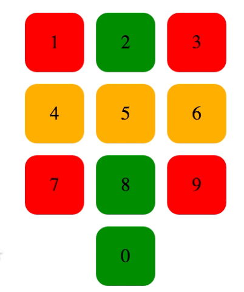

WEBD 335 ― Pete Gordon
Instructions: Take the following HTML structures (the HTML found within each prob# div) and without modifying the HTML at all and by only using CSS make the output style and behave exactly like the example image and/or video.
[10 points] Using the dial pad created in Homework #1; color the cells to be various colors depending on their nth positioning. Do not color individual cells, but rather color the cells using nth-child selectors.

[10 points] Use Media Selectors to create a navigation that is responsive to 500px width and behaes like the following Video:
[1 point] Using the index.html from problem provide an example of a child selector, a sibling selector, and an attribute selector.
[1 point] Using the full index.html file problem provide an example of a descendent child selector that is not a direct child, but rather a grandchild.
[1 point] Describe a few different examples of attribute selectors and how they might be useful.
[1 point] Describe the current browser support for viewport and viewport units.
[1 points] Provide and attempt to example a :before and :after pseudo element example.